Conversa inicial
Entendo seu momento e sua rotina
Respire.
Personal Organizer
Antes de tudo
Então se você ainda está presa à desordem — ou com coisas demais na sua lista…
Você está no lugar certo
Agendar uma Conversa →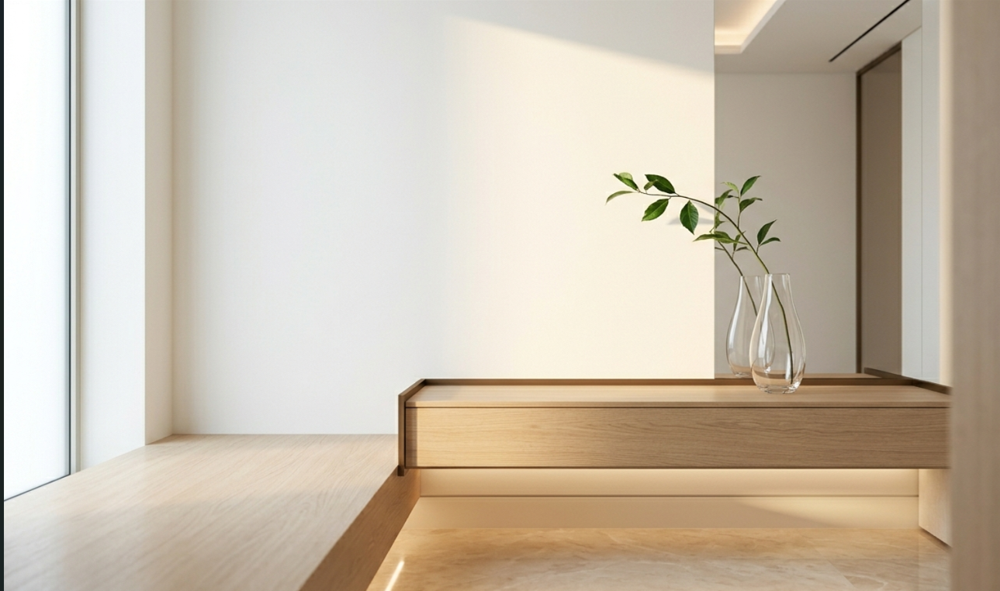
Cada espaço tem sua lógica. Cada cliente, seu ritmo. O trabalho começa sempre pela escuta.
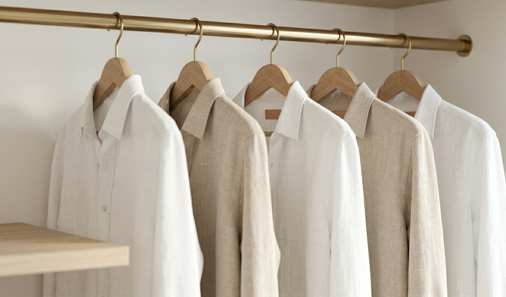
Serviço 01
Curadoria de peças e um sistema duradouro para facilitar sua rotina. As peças passam a ter lógica, visibilidade e propósito.
Ver Detalhes →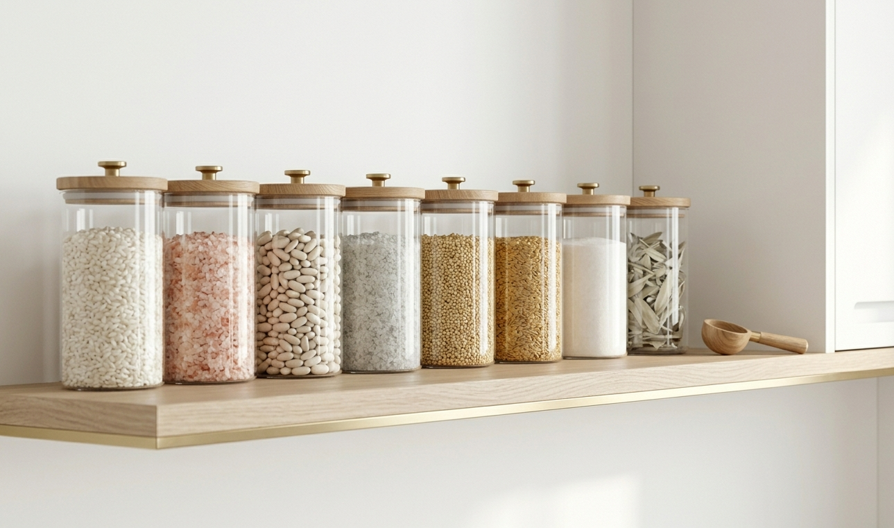
Serviço 02
Organização dos seus itens pessoais, criando um sistema claro e para seus dias. Tudo passa a ter lugar, tornando sua rotina mais leve, rápida e eficiente
Ver Detalhes →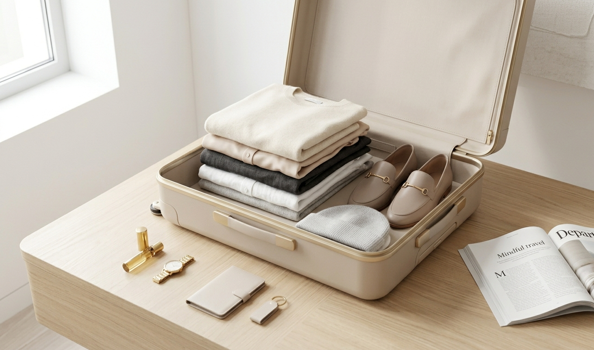
Serviço 03
Cada item é pensado estrategicamente, garantindo praticidade, otimização de espaço e facilidade ao longo de toda a viagem do momento de arrumar até o de usar.
Ver Detalhes →Cada projeto acontece com escuta, estratégia e sensibilidade. A organizacao final precisa fazer sentido para voce, nao para um padrao distante da sua vida real.
Conversa inicial
Entendo seu momento e sua rotina
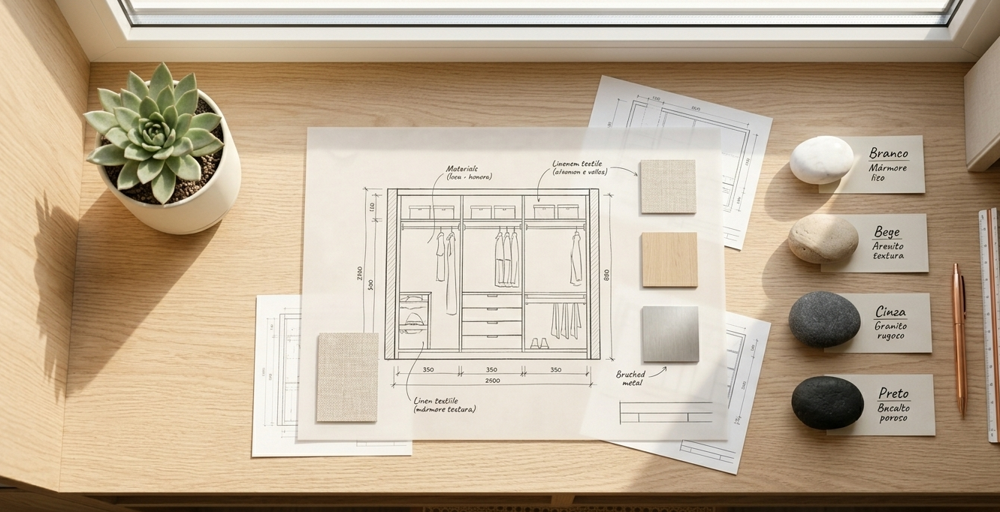
Estrategia personalizada
Criamos uma logica clara para o seu espaco
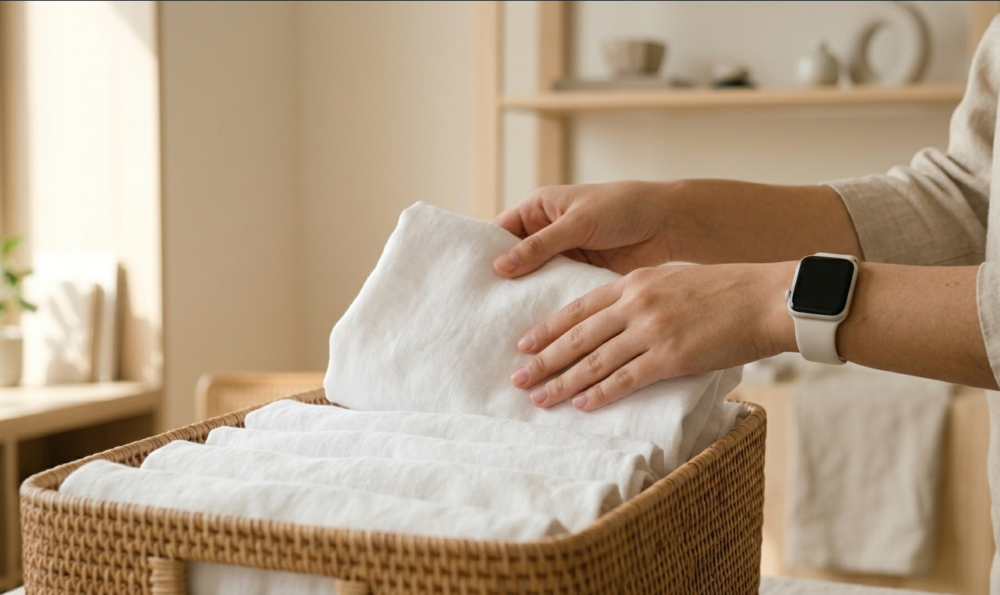
Implementacao guiada
Tudo fica funcional e facil de manter
Para quem se identifica
rotina cheia, casa sem respiro
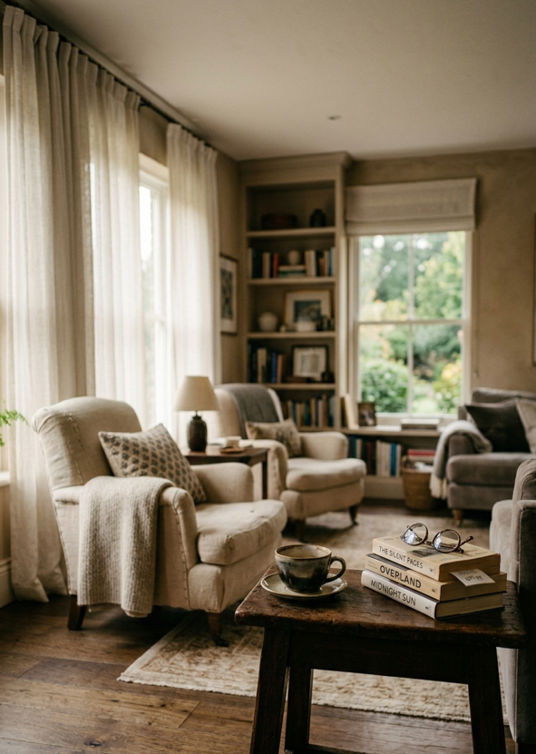
Quando sua casa ja nao acompanha o ritmo da sua rotina.
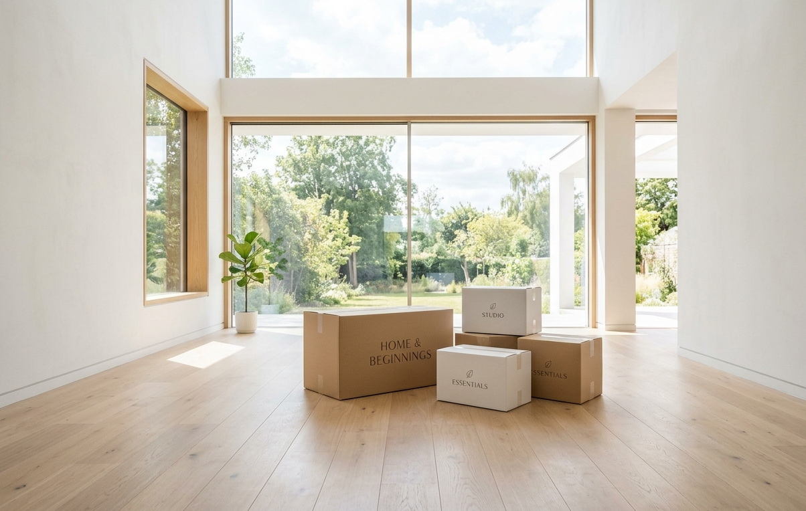
Mudancas de fase: casa nova, filhos, nova rotina ou trabalho.
Armarios cheios, mas voce ainda perde tempo procurando tudo.
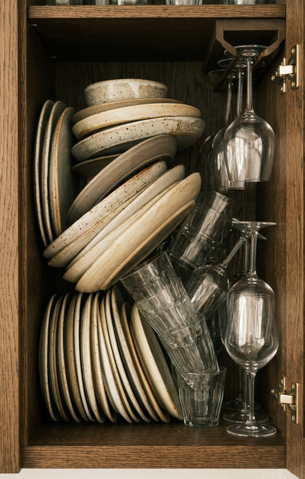
leve, pratico, sustentavel
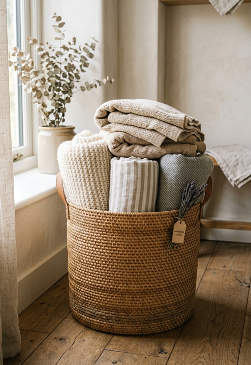
Voce quer praticidade real, sem perfeccionismo e sem culpa.
Minha Metodologia
Sistemas criados para a sua vida real, não para capas de revista.
O segredo de uma casa em ordem não é a perfeição, mas a funcionalidade. Crio lógicas onde cada objeto tem seu "endereço", facilitando o ato de guardar e acabando com o efeito sanfona da desordem.
Os 3 Pilares:
Descarte Consciente, Categorização Inteligente e Manutenção Simplificada.
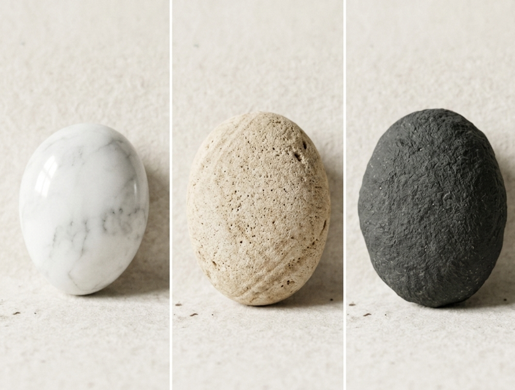
O Impacto
Recupere o seu tempo e a sua paz mental todos os dias.
Um ambiente desorganizado drena sua energia e atrasa sua rotina. Ao otimizar seus espaços, você elimina a fadiga de decisão e ganha tempo de qualidade para o que realmente importa.
Quero essa transformação →O verdadeiro valor:
Economia de tempo diário e redução drástica da ansiedade ao procurar itens.
Cada projeto é único. Aqui estão algumas das transformações que mais representam o impacto do trabalho.
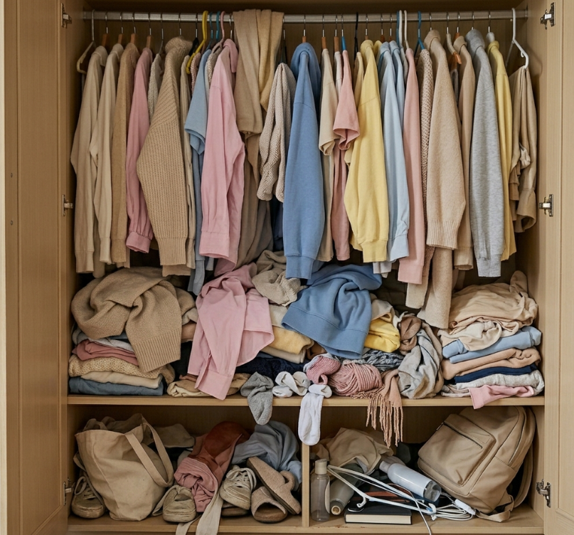
Antes
Desorganização que tornava o dia a dia lento e frustrante.
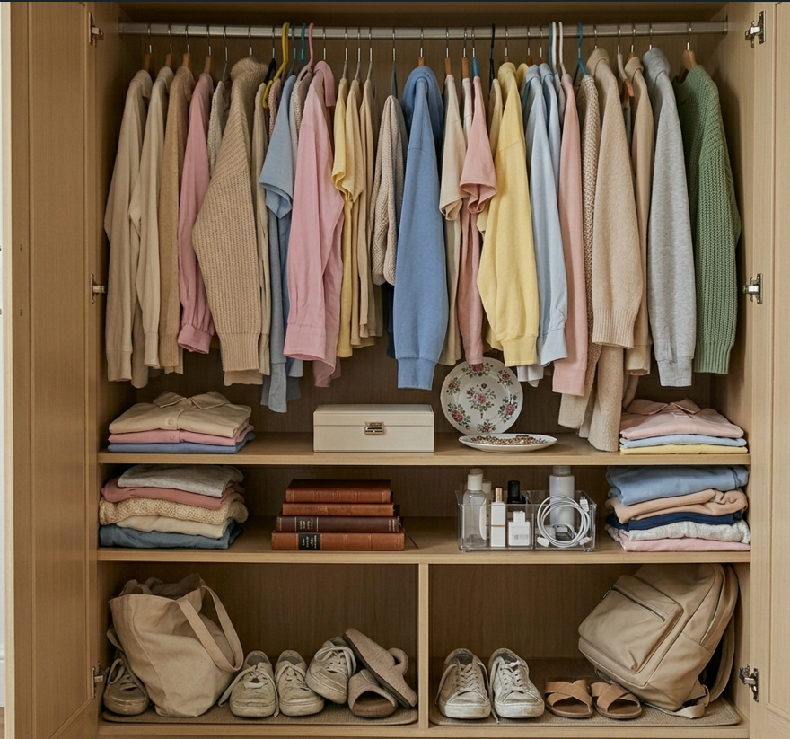
Depois
Sistema com lógica e visibilidade total para cada peça do guarda-roupa.
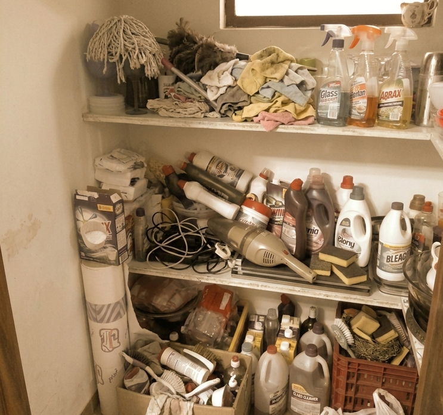
Antes
Itens acumulados sem nenhum critério de organização ou acesso.
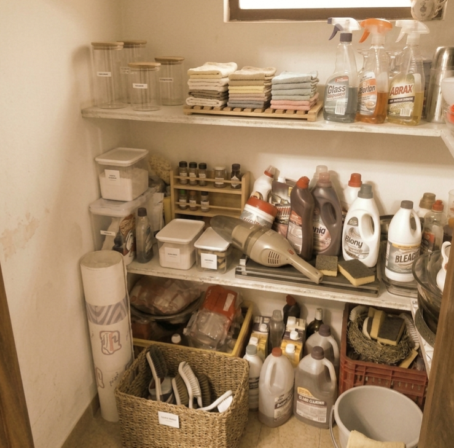
Depois
Categorias claras, acesso imediato, sistema fácil de manter sozinha.
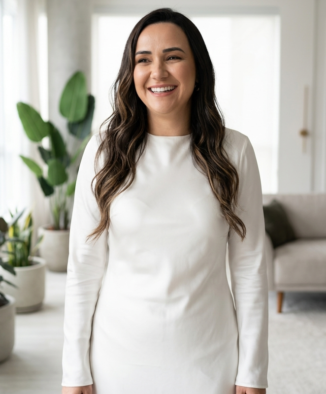
Resultados reais
"A organizacao da Bianca foi um divisor de aguas na minha rotina. Hoje tenho clareza no meu dia e muito mais leveza em casa."
Com uma rotina intensa de trabalho e casa, eu precisava de um sistema simples para manter o que construimos juntas.
- Camila, medica
Transformando o caos em propósito. Acredito que nosso ambiente dita nosso estado de espírito. Especializada em organização residencial, crio espaços que funcionam em perfeita sintonia com a sua rotina real, devolvendo o controle da sua casa para você.
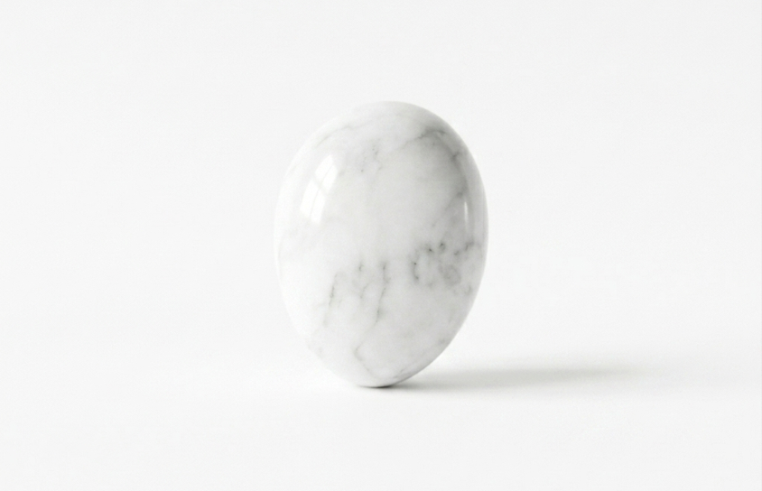